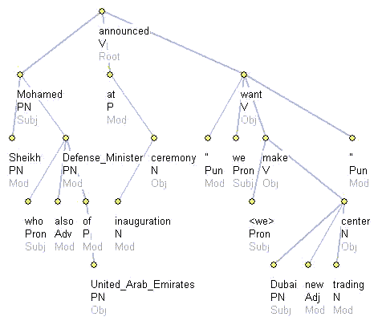
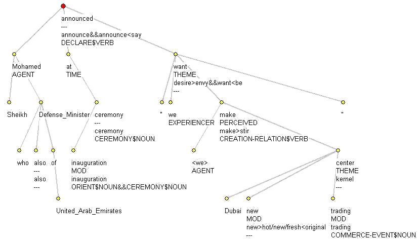

Interlingua


Examples
Sheikh Mohamed, who is also the Defense Minister of the United Arab Emirates, announced at the inauguration ceremony that "we want to make Dubai a new trading center."
IL0

Door/Green 2004, p. 6
IL1

Door/Green 2004, p. 6
[0, A1E1-4#Sheikh _ Mohamed<comma> _ who _ is _ also _ the _ Defense _ Minister _ of _ the _ United _ Arab _ Emirates<comma> _ announced _ at _ the _ inauguration _ ceremony _ that _ "we _ want _ to _ make _ Dubai _ a _ new _ trading _ center." _ , ---, ---, ---, ---, ---, ---, ---, ---, ---, no]([140, announced, V, announce, feat:past, Root, ---, announce&&announce<say, DECLARE$VERB&&INFORM$VERB, MKno&&WNyes&&MKno&&WNno, ---, yes]([20, Mohamed, PN, mohamed, feat:nom_num:sg, Subj, AGENT&&---, ---, ---, ---, ---, no]([10, Sheikh, PN, sheikh, feat:nom_num:sg, Mod, ---, ---, ---, ---, ---, no], [90, Defense_Minister, PN, defense_minister, feat:nom_num:sg, Mod, ---, ---, ---, ---, ---, no]([40, who, Pron, who, rel:+_feat:wh_feat:nom, Subj, ---, ---, ---, ---, ---, no], [60, also, Adv, also, ---, Mod, ---, also, ---, WNno, ---, yes], [100, of, P, of, ---, Mod, ---, ---, ---, ---, ---, no]([120, United_Arab_Emirates, PN, unitedarabemirates, feat:nom, Obj, ---, ---, ---, ---, ---, no]))), [150, at, P, at, ---, Mod, ---&&---, ---, ---, ---, ---, no]([180, ceremony, N, ceremony, feat:nom_num:sg, Obj, ---, ceremony, CEREMONY$NOUN, WNno&&MKno, ---, yes]([170, inauguration, N, inauguration, feat:nom_num:sg, Mod, ---, inauguration, ORIENT$NOUN&&CEREMONY$NOUN, MKno&&WNno&&MKno, ---, yes])), [220, want, V, want, tense:pres, Obj, THEME&&---, desire>envy&&want<be, ---, WNyes&&WNno, ---, yes]([200, ", Pun, ", ---, Mod, ---&&---, ---, ---, ---, ---, no], [210, we, Pron, we, feat:pers_feat:nom_num:pl_per:1, Subj, EXPERIENCER&&EXPERIENCER, ---, ---, ---, ---, no], [250, make, V, make, sform:inf, Obj, PERCEIVED&&PERCEIVED, make>stir, BUILD$VERB&&CREATION-RELATION$VERB, MKno&&MKno&&WNyes, ---, yes]([240, <we>, Pron, <we>, ---, Subj, AGENT, ---, ---, ---, ---, no], [300, center, N, center, feat:nom_num:sg, Obj, THEME, kernel, ---, WNno, ---, yes]([260, Dubai, PN, dubai, feat:nom_num:sg, Subj, ---, ---, ---, ---, ---, no], [280, new, Adj, new, feat:abs, Mod, ---, new>hot&&new&&fresh<original, ---, WNno&&WNno&&WNno, ---, yes], [290, trading, N, trading, feat:nom_num:sg, Mod, ---, trading, COMMERCE-EVENT$NOUN, MKno&&WNno, ---, yes])), [320, ", Pun, ", ---, Mod, ---&&---, ---, ---, ---, ---, no])))
IL2
IL2 has not yet been formalized. Door/Green 2004, p. 2